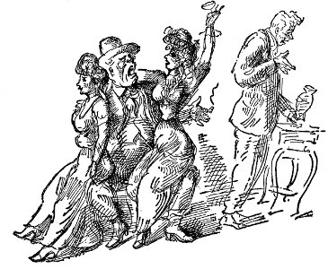
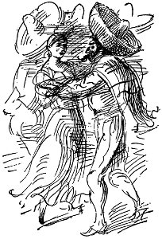
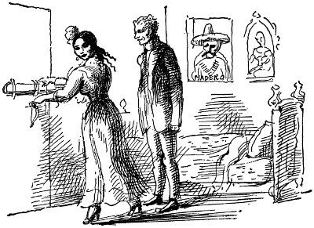

Bir cumartesi öğleden sonra, çocuklara komşunun bakmasını sağlayıp vodvil tiyatrosuna giderlerken Marshall'ın bakkal dükkânı önünde bir kalabalık gördüler. Mac dirseğiyle yol açarak ilerledi. Mavi pamukludan giysiler içinde genç, zayıf bir adam yangın alarmının bulunduğu köşedeki elektrik direğine yakın duruyor, Bağımsızlık Bildirisi'ni okuyordu: insansal olguların akışı içinde . . . Bir polis yanına yaklaşıp gitmesini söyledi . . . vazgeçilmez haklar . . . hayat, özgürlük ve mutluluğun peşinden gitme.
Şimdi iki polis vardı. Biri genci omuzlarından tuttu, direkten ayırmaya çalıştı.
“Haydi, Fainy, gösteriye geç kalacağız,” deyip duruyordu Maisie.
Bir polisin ötekine, “Hey, eğe getirin, namussuz herif kendini direğe kilitlemiş,” dediğini duydu. Bu arada Maisie de onu çekiştirerek tiyatro gişesine götürmeyi başarmıştı. Karısını tiyatroya götürmeye söz vermişti, kendisi de kış boyu hiçbir yere çıkmış değildi. Gördüğü son şey, polisin kolunu kaldırıp delikanlının çenesine attığı yumruktu.
Tüm öğle sonrası, karanlık, havasız tiyatroda oturdu Mac. Ne oynanan oyunu ne de aralarda gösterilen filmi gördü. Maisie'yle de konuşmadı. Midesinde belirsiz ağrıyla orada oturdu kaldı. Çocuklar, bu kentin ortasında konuşma özgürlüğü savaşı veriyor olmalıydılar. Arada bir sahneden gelen soluk parıltıda Maisie'nin yüzüne bakıyordu. Sıcak sobanın başında oturan kedininki gibi doygun kıvrımlarla biraz tombullaşmıştı, ama hâlâ güzeldi. Her şeyi unutmuş, dudakları aralık, gözleri eğlenceye gitmiş küçük kız gibi parlayarak oyunu izlerken çok mutluydu. “Sanırım bir güzel satıldım orospu çocuklarına, bir güzel,” deyip duruyordu kendi kendine, Mac.
Sahneye en son çıkan Eva Tanguay'dı. “Ben Eva Tanguay'ım, aldırmam hiçbir şeye” diye şarkı söyleyen genizden gelme ses, kendini karamsarlığa kaptırmaktan kurtardı Mac'ı. Her şey ansızın pırıl pırıl, apaçık göründü gözüne; ağır yaldızlı süslemeleriyle sahne, localardaki insanların yüzleri, önündeki insanların başları, parfüm kokusuna karışmış bayağı pudra kokusu, sahnedeki mavi ışıklar, sahne ışıklarından oluşmuş gökkuşağı içinde kendini oradan oraya savuran sıska kadın.
Gazeteler diyor bana deli diye
Ama . . . ben . . . aldırmam . . . hiçbir şeye
Mac ayağa kalktı. “Maisie, evde buluşuruz. Sen oyunun sonunu izle. Ben pek iyi değilim.” Karısı yanıtlayamadan sıradaki öteki insanların önünden kayıp dar geçitten dışarı çıktı. Caddede her günkü cumartesi kalabalığı dışında hiçbir şey yoktu. Mac, kent merkezinde dört dönüp durdu. Dünya Sanayi İşçileri bürosunun nerede olduğunu bile bilmiyordu. Birileriyle konuşması gerekliydi. Brewster Oteli'nin önünden geçerken burnuna bira kokusu geldi. Canı içki içmek istedi. Böyle giderse aklını kaçıracaktı.
Bir sonraki köşede bara girip birbiri ardına dört İrlanda viskisi içti. Barda, sıra sıra oturmuş adamlar içki içiyor, birbirlerine ısmarlıyor, yüksek sesle beyzboldan, bokstan, Eva Tanguay'dan ve onun Salome dansından söz ediyorlardı.
Mac'ın yanında, geniş kenarlı fötr şapkayı ensesine devirmiş, kırmızı yüzlü bir adam oturuyordu. Mac beşinci içkisine uzanırken adam elini onun koluna koyup, “Kusura bakmazsan bunu da benden iç, ortak . . . bugün bir şey kutluyorum,” dedi.
“Sağ ol, şerefine,” dedi Mac.
“Ortak, kusura bakmazsan söyleyeyim, bütün fıçıyı bir anda bitirmek istiyormuşsun gibi, bize bir şey bırakmayacakmışsın gibi içiyorsun . . . Ara verip başka şey iç.”
“Oldu, ahbap,” dedi Mac. “Bir bira içelim bakalım.”
“Benim adım McCreary,” dedi iriyarı adam. “Meyve ürünümü daha yeni sattım. San Jacinto yolu yakınlarındanım.”
“Benim adım da McCreary,” dedi Mac.
Yürekten tokalaştılar.
“Şu Tanrı'nın işine bak, gerçek bir rastlantı bu . . . Hısım ya da öyle bir şey olmalıyız . . . Nerelisin, ortak?”
“Ben Chicago'luyum ama bizimkiler İrlandalıdır.”
“Benimkiler Doğu'dan, Delaware'den . . . ama onlar da şu güzel İrlanda-İskoç karışımındandırlar.”
Bunun şerefine daha daha içtiler. Sonra köşe masaya oturup konuştukları başka bara gittiler. İriyarı adam çiftliğinden, kayısılarından, son çocukları doğduğundan beri karısının nasıl yataktan çıkamadığından söz etti. “Çok severim bizim karıyı, ama erkeğin elinden ne gelir? Karısına sadık kalmak için kendini hadım edemez ya.”
“Ben de karımı çok severim,” dedi Mac. “Çok da tatlı çocuklarım var. Rose dört yaşında, daha şimdiden okumaya başladı, Ed yürümeyi öğreniyor . . . Ama lanet olsun, evlenmeden önce bu dünyada işe yarayacağımı düşünürdüm . . . kendimi pek öyle bir matah sandığımı söylemek istemiyorum . . . Anlarsın ya.”
“Elbette, ortak, gençken ben de kendimi öyle sanırdım.”
“Maisie de çok iyi bir kız, onu her zaman çok sevdim,” dedi Mac, ansızın gelen sıcak bir tutku dalgasının her yanını kapladığını hissederek; tıpkı bazı cumartesi akşamları çocukları yıkayıp yatırmasına yardım ederken, oda hâlâ buhar içindeyken, gözleri birden Maisie'nin gözleriyle buluşunca, gidecek hiçbir yerleri olmadığı, yalnızca ikisinin bir arada olduğu zamanlardaki gibi.
San Jacinto yolundan gelen adam şarkı söylemeye başladı:
Ah, karım gitti kırlara,
Hurraa, hurraa
Severim karımı ama evlat
Gitti karım uzaklara
“Ama ne yazık ki,” dedi Mac, “insanın kendini iyi hissedebilmesi için kendisi ve çocukları dışında bir şeyler için de çalışması gerekir.”
“Tamamen senin gibi düşünüyorum, ortak. Herkes kendisi için, şeytan götürsün gerisini.”
“Ah, neyse boşver, Tanrı'nın cezası,” dedi Mac, “keşke yine serserilik etseydim ya da Goldfield'de, çocukların yanında olsaydım.”

İçtiler, içtiler, bedava yemek yediler, daha içtiler, her seferinde de İrlanda viskisini birayla kapatıyor, sonra yine başlıyorlardı. San Jacinto yolundan gelen adamda telefon numarası vardı, kızlara telefon etti, bir şişe viski aldılar, kızların evine gittiler. San Jacinto yolundan gelen çiftçi iki dizinde birer kız, oturup şarkı söyledi: “Ah, karım gitti kırlara.” Mac, bir köşeye oturmuş, başı ikide bir göğsüne düşerek geğirip duruyordu. Sonra ansızın çok kötü kızdı, üzerinde cam vazo bulunan masayı devirerek ayağa kalktı.
“McCreary,” dedi, “burası sınıf bilinci taşıyan devrimciye göre yer değil . . . ben devrimciyim, kahrolası . . . dışarı çıkıp o konuşma özgürlüğü kavgasına katılacağım.”
Öteki McCreary şarkısını sürdürdü, hiç aldırmadı. Mac kapıyı çarparak çıktı. Kızlardan biri kırılan vazo konusunda söylenerek onu dışarıya kadar izledi, ama Mac kızı suratından iterek sessiz sokağa fırladı. Son buharlı arabayı kaçırmıştı, eve yürümesi gerekiyordu.
Eve vardığında Maisie'nin, sırtında sabahlığıyla sundurmada oturduğunu gördü. Ağlıyordu. “Senin için ne de güzel bir yemek hazırlamıştım,” diyordu durmadan, gözleri soğuktu, acılı bakıyordu, tıpkı evlenmeden önce Goldfield'den döndüğü zamanki gibi.
Ertesi gün, başında korkunç bir ağrı vardı, midesi bozulmuştu. Çarçur etmeye gücünün yetmeyeceği bir on beş dolar harcamış olduğunu gördü. Maisie konuşmuyordu. Dönüp durarak, kendini çok kötü hissederek, bir daha hiç uyanmamacasına uyumak isteyerek yatakta kaldı. O pazar akşamı Maisie'nin kardeşi Bill yemeğe geldi. Kardeşi eve girer girmez Maisie, hiçbir şey olmamış gibi yine konuşmaya başladı. Bunun yalnızca Bill'in kavga ettiklerini anlamaması için yapıldığını bilmek Mac'a acı verdi.
Bill güçlü kuvvetli, uçuk sarı saçlı, kırmızı boyunlu, şişmanlamaya yeni başlamış bir adamdı. Masaya oturup Maisie'nin yaptığı biftekle mısır ekmeğini yerken Los Angeles'taki emlak işlerinin patlaması üzerine büyük sözler ediyordu. Bir zamanlar trenlerde makinistti, kazada yaralanmış, tazminat olarak aldığı parayla edindiği mülklerle şanslı çıkışlar yapmıştı. San Diego'daki işini bırakıp kendisiyle çalışması için kandırmaya uğraşıyordu Mac'ı. “Yalnızca Maisie'nin hatırı için işe başlamana yardım edeceğim,” deyip duruyordu boyuna. “Sonra da on yıl içinde zengin bir adam olacaksın, tıpkı benim daha kısa sürede olacağım gibi . . . Şimdi tam zamanıdır Maisie, çocuklar, çıkış yapmanızın, daha gençken, yoksa çok geç olacak. Mac da hayatı boyunca işçi olarak kalacak.”
Maisie'nin gözleri parladı. Çikolatalı pastayla bir şişe tatlı şarap çıkardı. Yanakları al al olmuştu, inci gibi dişlerini göstererek sürekli gülüyordu, ilk çocuğunu doğurduğundan beri böylesine güzel olmamıştı. Bill'in para konusunda söyledikleri onu sarhoş etti.
“Diyelim ki insan zengin olmak istemiyor . . . Gene Debs'in ne söylediğini biliyorsun, ‘Ben halkla birlikte yükselmek istiyorum, halkın içinden yükselmek değil,' ” dedi Mac.
Maisie'yle Bill güldüler. “Ben sana söyleyeyim, insan böyle konuşmaya başladı mı kafayı üşütmüş demektir,” dedi Bill.
Mac kızardı, hiçbir şey söylemedi.
Bill iskemlesini geriye itip boğazını temizledi, ciddi bir sesle: “Dinle beni Mac . . . birkaç gün bu kentte dolaşıp duruma bakacağım, ama işler burada eskiden epey ölüymüş gibi geliyor bana. Şimdi sana önerim şu . . . Maisie için ne düşündüğümü bilirsin . . . bence dünyanın en tatlı küçük kızıdır. Keşke benim karım da Maisie'nin yarısı kadar olsaydı . . . Neyse, önerim şu: Ocean View Caddesi'nde birçok harika İspanyol tipi ev satın aldım, daha da satmadım. Son derece lüks bir semtte, yirmi beş ayak ön cepheli, yüz ayak derinliği olan evler. Onlara temiz tırınk para olarak tam beş bin dolar saydılar. Birkaç yıl içinde hiçbirimiz oralara burnumuzun ucunu bile uzatamayacağız. Milyonerler sokağı olacak. Şimdi eğer evin Maisie üzerine yapılmasına ses çıkarmazsan sana olacakları anlatayım . . . Tapu harcını, intikal vergisini, öteki giderleri ben ödeyeceğim, seninle mallarımızı değiştireceğiz, ipotekleri dengeleyeceğim, bu mallar ailenin elinde kalsın diye yapacağım bunları, böylece de şimdi ödediğinden daha çok para vermeyeceksin aslında, başarıya giden yolda da bir atılım yapmış olacaksın.”
“Ah, Bill, sen bir harikasın,” diye haykırdı Maisie. Koşup kafasının tepesini öptü, bacaklarını sallayarak iskemlesinin koluna oturdu. “Vay canına, bu işi biraz düşünmem gerek,” dedi Mac. “Bu öneriyi yapmakla büyük bir eli açıklık örneği verdin.” Maisie terslenerek, “Fenian, Bill'e daha çok gönül borcu duyman gerekirdi sanırım,” dedi. “Elbette böyle olacak.”
“Yoo, çok haklısın,” dedi Bill. “İnsan böyle bir öneriyi oturup düşünmelidir. Ama sunulan yararları da unutma, çocuklar için daha iyi okullar, daha seçkin çevre, ölmekte olan kent yerine yüksek, parlayan bir yer, lanet olası aylıklı köle olmak yerine yükselmek fırsatı.”
Böylece bir ay sonra McCreary'ler Los Angeles'a taşındılar. Yol paraları, eşyaların taşınması Mac'ı beş yüz dolar borca soktu. Bunun üstüne bir de küçük Rose kızamık oldu, doktorun faturası da giderleri artırdı. Mac gazetelerin hiçbirinde iş bulamadı. Üyeliğini aktardığı yerel sendikada işsiz on kişi daha vardı.
Zamanının büyük bölümünü kaygı içinde ortalıkta dolaşarak geçiriyordu. Artık evde bulunmaktan hoşlanmıyordu. Şimdi Maisie'yle hiç geçinemiyorlardı. Maisie'nin aklı kardeşi Bill'in evinde olanlardaydı, karısı Mary Virginia'nın neler giydiğinde, çocuklarını nasıl yetiştirdiklerinde, satın aldıkları gramofondaydı. Mac, parklardaki sıralara oturup Akla Başvuru'yu, Sanayi İşçisi'ni ve yerel gazeteleri okuyordu.
Bir gün yanındaki adamın cebinden Sanayi İşçisi'nin sarkmakta olduğunu gördü. Nedense ansızın dönüp adama baktığında uzun süredir sırada yan yana oturmaktaydılar.
“Hey, sen Ben Evans değil misin?”
“Vay canına Mac . . . Ne oldu sana oğlum, zayıflamışsın.”
“Yoo, bir şeyim yok. Kendime bir patron arıyorum hepsi bu.”
Uzun süre konuştular. Sonra çocukların bazılarının sık sık uğradığı Meksika lokantasına kahve içmeye gittiler. Bozuk İngilizce konuşan, sarışın, mavi gözlü bir delikanlı da katıldı onlara. Mac onun Meksikalı olduğunu öğrenince çok şaşırdı. Herkes Meksika'dan söz ediyordu. Madero devrimi başlatmıştı. Her an Diaz'ın düşmesi bekleniyordu. Her yerde toprak köleleri dağlara çıkıyor, varlıklı toprak sahiplerini çiftliklerinden sürüyorlardı. Kent işçileri arasında anarşist propaganda yayılıyordu. Lokantayı kırmızıbiberle çok kaynamış kahvenin sıcak kokusu sarmıştı. Her masada koyu pembe, al kâğıt çiçekler, alçak sesle konuşan, bronz rengi, esmer yüzlerde parıldıyan bembeyaz dişler vardı. Oradaki Meksikalılardan kimi Dünya Sanayi İşçileri'ne üyeydi, ama çoğu anarşistti. Devrimden, yabancı yerlerden konuşulması Mac'ın kendisini yine mutlu, serüvenle dolu duymasına, tıpkı Ike Hall'la birlikte aylak gezerken olduğu gibi hayatta bir amacı bulunduğunu kavramasına yol açtı.
“Hey, Mac, yürü Meksika'ya gidelim, bakalım bu devrim konuşmalarının aslı astarı var mı?” diyordu boyuna Ben.
“Çocuklarım olmasaydı . . . Kahrolasıca, Fred Hoff haklıydı, beni paylayıp devrimcinin evlenmemesi gerektiğini söylerken.”
Sonunda Mac Times'da linotip operatörü olarak iş buldu, evde durum biraz düzeldi, ama parasının tümü borçlarına, ipotek faizlerine gittiğinden kendine ayıracak hemen hiçbir şey kalmıyordu. Yaptığı yine gece işiydi, artık Maisie'yle çocukları neredeyse hiç göremiyordu. Pazar günleri Maisie küçük Ed'i kardeşi Bill'e götürüyor, o da Rose'la birlikte ya yürüyüşe çıkıyor ya da tramvayla geziyordu. Bu, haftanın en güzel bölümüydü. Cumartesi akşamları bazen konferansa gidiyor, bazen de Sanayi İşçileri salonunda çocuklarla konuşuyordu, ama bu radikal toplulukta görünürüm de işimi yitiririm diye de ödü patlıyordu. Çocuklar onu hayli tabansız buluyorlar, ama eski tüfek olduğunu düşündüklerinden katlanıyorlardı.
Ara sıra Milly'den Tim Dayı'nın sağlık durumunu bildiren mektuplar alıyordu. Cohen adında, yeminli muhasebeci olan, mezbahanın bürosunda çalışan biriyle evlenmişti. Tim Dayı onlarla birlikte oturuyordu. Mac onu Los Angeles'a, kendi yanına almak isterdi ama buna kalkışmanın, yalnızca Maisie'yle dalaşmak anlamına geleceğini biliyordu. Milly'nin mektupları epeyce üzücüydü. Yahudi'yle evli olduğu için kendini çok tedirgin hissettiğini yazıyordu. Tim Dayı hep hastaydı. Doktor içki yüzünden olduğunu söylüyordu. Eline ne zaman para verseler hemen gidip içkiye yatırıyordu. Milly çocuk istiyordu. Ona göre böylesine güzel çocukları olduğu için Fainy çok mutlu olmalıydı. Zavallı Tim Dayı'nın bu dünyada daha çok kalamayacağından korkuyordu.
Gazeteler Madero'nun öldürüldüğünü yazdığı gün Milly'den aldığı telgrafta Tim Dayı'nın öldüğünü öğrendi Mac. Cenaze için hemen para yollamasını istiyordu Milly. Mac, doğru bankaya gidip çocukların okulu için biriktirdikleri paradan elli üç dolar yetmiş beş sent çekti, postaneye koşup ellisini Milly'ye yolladı. Bebeğin doğum günü geldiğinde kardeşi Bill'in verdiği beş doları bankaya yatırmaya gidinceye kadar, Maisie hiçbir şey anlamadı.
O gece Mac anahtarla kapıyı açıp içeri girdiğinde salonun ışığını yanar bulunca şaşırdı. Maisie, yarı uykulu, sedirde battaniyeye sarınmış bekliyordu. Mac onu gördüğüne sevinerek öpmeye gitti. “Ne oldu, şekerim?” dedi. Maisie, onu iteleyerek ayağa fırladı.
“Seni hırsız,” dedi. “Hakkında ne düşündüğümü söylemeden uyuyamadım. Sanırım paraları içkiye, başka kadınlara savuruyorsun. Bu yüzden de artık seni hiç göremez oldum.”
“Maisie, sinirlenme, güzelim . . . Ne oluyor, gel sakince konuşalım.”
“Boşanacağım senden, işte olacağı bu. Serserilik etmek için kendi çocuklarının parasını çalıyorsun . . . kendi zavallı çocuklarının . . .”
Mac dimdik durup yumruklarını sıktı. Dudaklarının titremesine karşın büyük bir soğukkanlılıkla konuştu.
“Maisie, o parayı çekmeye hakkım vardı. Bir iki hafta içinde yatıracağım yine, sen burnunu sokma bu işe.”
“Aman, aman, şuna bakın, elli dolar biriktirecekmiş. Sen karını, çocuklarını doğru dürüst yaşatacak adam bile değilsin, zavallı, masum çocuklarının parasını yiyorsun,” diyerek Maisie kuru kuru hıçkırmaya başladı.
“Maisie, yeter artık . . . canımı sıkıyorsun!”
“Senden, o baş belası tanrıtanımaz sosyalist konuşmalarından canı sıkılan benim aslında. Şimdiye kadar hiç kimse hiçbir yere varamadı böyle, ne de o senin düşkün, serseri dostların varır . . . Keşke seninle hiç evlenmeseydim. Eğer kapana kısılmasaydım da asla evlenmezdim, bundan geberesiye emin olabilirsin.”
“Maisie, böyle konuşma.”
Gözleri kocaman açılmış, hırs dolu Maisie üstüne yürüdü.
“Bu ev benim üzerime, bunu unutma.”
“Pek güzel, bu iş biter.”
Neye uğradığını anlamadan kapıyı arkasından çarpıp sokakta yürümeye başladı. Her yağmur tanesi yolun tozunda bir gümüş dolar büyüklüğünde duruyordu. Sokak lambasının çevresinde, tiyatrodaki yağmur görüntüsüne benziyordu. Mac nereye gideceğini bilemiyordu. Sırılsıklam, yürüdü, yürüdü. Bir köşe başındaki bahçede, küçük bir sığınak oluşturmuş palmiye kümesi vardı. Uzun süre titreyerek orada durdu. Ağlayacak gibi oluyordu. Takırdayan, ekşi kokulu matbaadan dönünce yorganı usulca açıp uyurken yanına kaydığında Maisie'nin sıcacık yumuşaklığını düşündükçe, göğüslerini, incecik gecelikten hissedilen göğüs uçlarını düşündükçe, dışarda yataklarında uyuyan çocuklarını, küçük, sıcak alınlarını öpmek için üzerlerine eğilişini düşündükçe, “Pek güzel, kapandı bu iş,” dedi başka birisiyle konuşuyormuş gibi yüksek sesle. Ancak ondan sonradır ki düşünebildi: “Şimdi ülkeyi gezip görmekte, eylem için çalışmakta, başıboş dolaşmakta özgürüm.”
Sonunda Ben Evans'ın pansiyonuna gitti. Kapı zilini birine duyuruncaya kadar uzun süre geçti. Sonunda içeri girince Ben yatakta oturup uyku sersemi ona baktı. “Ne halt karıştırdın?”
“Şey, Ben, evden ayrıldım . . . Meksika'ya gidiyorum.”
“Polisler mi peşinde? Tanrı aşkına burası gelinecek yer mi?”
“Yo, yalnızca karımla ilgili.”
Ben güldü. “Kendi aşkın uğruna desene.”
“Şey, Ben, Meksika'ya gelip devrimi görmek ister misin?”
“Ne halt edebilirsin ki Meksika'da?.. Çocuklar beni 275. Bölge yazmanlığına seçtiler . . . Burada kalıp on yedi buçuğumu kazanmalıyım. Hey, sırılsıklam olmuşsun, soyunup şu kapının arkasında asılı iş giysilerimi sırtına geçir . . . Biraz uyusan daha iyi, ben öteye çekilirim.”
Mac, linotipte yerini alacak biri bulununcaya kadar iki hafta daha kentte kaldı. Maisie'ye uzaklara gittiğini, durumunu düzeltir düzeltmez çocuklara bakabilmesi için para göndereceğini yazdı. Sonra bir sabah cebine yirmi beş dolar ve Arizona'nın Yuma kentine bir bilet koyup trene bindi. Yuma cehennemden de sıcaktı. Demiryolu işçileri pansiyonunda biri, oradan Meksika'ya geçmeye kalkışırsa mutlaka susuzluktan öleceğini söyledi. Meksika'daki devrim konusundaysa kimsenin bir şey bildiği yoktu. Böylece de Güney Pasifik yoluyla El Paso'ya gitti. Sınır boyunda kan gövdeyi götürüyor diyordu herkes. Haydutlar her an Juarez'i alacak gibiydiler. Gördükleri Amerikalıları vuruyorlardı. El Paso kapıları, Porfirio Diaz'ın yönetimde olduğu o eski mutlu günler için yaslara bürünmüş çiftçilerle, madencilerle doluydu, beyaz adam orada iyi para yapabilirdi. Mac, yüreği çarparak uluslararası köprüyü geçip Juarez'in tozlu, telaşlı, kerpiç sokaklarına girdi.
Küçük tramvaylara, katırlara, deniz mavisine boyanmış duvarlara, pazarda meyve yığınlarının ardına çömelmiş köylü kadınlara, her yanı dökülen, süslemeli kiliselere, her sokağa açılan derin içkievlerine bakarak dolaştı Mac. Her şey tuhaftı, biberli hava burnuna doluyordu, bundan sonra ne yapacağını düşünüyordu. Bir nisan gününün öğle sonrasıydı. Mavi pamuklu gömleğinin içinde terliyordu. Her yanı toz toprak içindeydi, kaşınıyordu, yıkanmalıydı. “Bu tür işler için yaşlandım,” dedi kendi kendine. Sonunda Los Angeles'taki Meksikalı anarşistlerden birinin gidip görmesini söylediği Ricardo Perez adındaki adamın evini aradı. Kentin kıyısında düzensiz bir bahçe içindeki evi bulmakta biraz zorluk çekti. Çamaşır asan kadınlardan hiçbiri Mac'ın ne dediğini anlamıyordu. Sonunda Mac, yukarılardan bir yerden gelen, özenle yumuşatılmış bir İngilizce duydu. “Ricardo Perez'i arıyorsanız yukarı çıkın . . . Lütfen . . . Ben Ricardo Perez'im.” Mac, başını kaldırıp eski bir gömlek giymiş, uzun boylu, bronz tenli, gri saçlı bir adamın üst balkondan eğilmekte olduğunu gördü. Demir merdivenlerden yukarı çıktı. Tokalaştılar.
“McCreary . . . Arkadaşlarım sizin geleceğinizi yazdı.”
“Evet, benim . . . İngilizce konuştuğunuza sevindim.”
“Uzun yıllar Santa Fe'de, Brockton'da, Massachusetts'te kaldım. Oturun, lütfen . . . Amerikalı bir devrimci işçiyi konuk ettiğim için seviniyorum . . . Düşüncelerimizde tam anlaşamasak bile ortak çok yanımız var. Büyük savaşta omuzdaşız.” Mac'ın omzuna vurarak bir iskemle iteledi. “Lütfen.” Yalınayak, yırtık gömlekler içinde bir sürü sarı, küçük çocuk vardı ortalıkta. Ricardo Perez oturarak en küçüğünü, keçeleşmiş atkuyruğu saçlı olanı, yüzü pislik içindeki küçük kızı dizine oturttu. Her yer acı biber, yanık zeytinyağı, çocuk, çamaşır kokuyordu. “Meksika'da ne yapacaksın işçi dostum?”
Mac kızardı. “Bir bakıma olayların içine girmek istiyorum, yani devrime.”
“Durum burada çok karışık . . . Kent işçileri örgütleniyor, sınıf bilinçleri var, ama ırgatlar, köylüler, hain önderlerce kolayca ters yöne çekiliyor.”
“Biraz eylem görmek istiyorum, Perez . . . Los Angeles'ta oturuyor, ötekiler gibi baş belası bir propagandacı oluyordum. Matbaacılık işiyle hayatımı sürdürebilirim, sanıyorum.”
“Seni arkadaşlarla tanıştırmalıyım . . . Lütfen . . . Şimdi gidelim.”
Mavi bir alacakaranlık, sokakların üzerine kapanıyordu. Işıklar sarı sarı yanmaya başlamıştı. Mekanik piyanolar içkievlerinde tıngırdıyordu. Bir geçitte küçük, düzensiz bir orkestra çalıyordu. Pazaryeri meşalelerle aydınlatılmıştı, çardakların altında her tür parlak, canlı renkli mal satılıyordu. Köşede, her ikisi de kör, yüzleri çiçekbozuğu yaşlı bir Kızılderili'yle yaşlı, ablak suratlı bir kadın, başlarını siyah şalla örtmüş kadınlardan, üzerlerinde pijama gibi beyaz keten giysiler bulunan erkeklerden oluşmuş, kısa boylu, tıknaz taşralı kalabalığının ortasında, tiz seslerle bitmez tükenmez bir türkü söylüyorlardı.
“Madero'nun öldürülüşünü söylüyorlar . . . Halkın bilinçlenmesi açısından bu çok iyi . . . Gördüğün gibi gazete okuyamadıkları için haberleri türkülerden alıyorlar . . . Sizin elçiniz öldürdü Madero'yu. Burjuva idealistiydi, ama büyük adamdı . . . Lütfen . . . İşte salon . . . Şu yazıyı görüyor musun? Toplumsal Devrimin Başlangıcı olan Hak Arama Devrimi Çok Yaşa, Burası Anarşist Sanayi ve Tarım Sendikası salonu. Burada Huerta yanlısı birkaç federal var, ama çok güçsüzler, bize saldırmayı göze alamazlar. Ciudad Juarez, devrimin yüreği, ruhudur. Lütfen . . . birkaç sözcükle arkadaşları selamlayın.”
Dumanlı salon ve kürsü, mavi keten tulumlar içindeki esmer adamlarla doluydu, arkada beyazlar giymiş birkaç ırgat vardı. Birçok el Mac'ınkini sıktı, kara gözler dümdüz baktı, bir sürü adam onu kucakladı. Kürsünün önündeki sıralardan bir iskemle verdiler ona. Açıkça anlaşıldığı gibi Ricardo Perez başkandı. Konuşmasına her ara verdiğinde alkışlanıyordu. Salonda bir büyük olay olduğu duygusu dolaşıyordu. Mac ayağa kalktığında biri İngilizce, “Sonuna kadar dayanışma,” diye bağırdı. Mac, Batı Sanayi İşçileri'nin görevlendirdiği sözcü olmadığı, ama tüm sınıf bilinci taşıyan Amerikalıların Meksika devrimini büyük umutlarla izledikleri üzerine bir şeyler kekeleyerek konuşmasını, devrimcilerin atasözü durumuna gelen, eskisinin kabuğu içinde yeni toplum yaratma deyimiyle bitirdi. Perez bunları çevirince konuşma çok etkili oldu. Mac çok mutluydu. Sonra toplantı sürdü de sürdü, bir sürü konuşma yapıldı, arada bir şarkı söylendi. Mac birkaç kez başının önüne düştüğünü anladı. Yabancı bir dili dinlemek uykusunu getirmişti. Salonun kapısındaki küçük bando çalmaya, herkes şarkı söylemeye başlayıncaya, toplantı da böyle bitinceye kadar uyumamak için kendini zor tuttu.
“Cuatro Milpas bu . . . anlamı dört mısır tarlasıdır . . . Şu sıralar herkesin söylediği bir ırgat türküsü,” dedi Perez.
“Epey acıktım . . . Bir yerlerde bir şeyler yemek istiyorum,” dedi Mac. “Sabah bir fincan kahveyle azıcık börek yemiştim El Paso'da, ondan beri de bir şey yemedim.”
“Yoldaşımızın evinde yiyeceğiz,” dedi Perez. “Lütfen . . . burdan.”

Şimdi karanlık, boş olan sokaktan ayrılıp boncuk perdeli kapıdan geçerek beyaz badanalı, güçlü karpit kokusu saçan asetilen ışığının aydınlattığı odaya girdiler. Benekli örtüsü olan uzun masanın ucuna oturdular. Masa, toplantıdaki adamlarla gitgide doldu. Çoğu ince, keskin yüzlü, mavi tulumlu gençlerdi. Öteki uçta yağlı, esmer, büyük burunlu, Kızılderili gibi geniş, çıkık elmacıkkemikleri olan bir adam oturuyordu. Perez, Mac'a iki bardak, garip bir tadı olan, başını döndüren beyaz içki verdi. Yemek çok acıydı, biberliydi, boğazı tıkandığından çok az yiyebildi. Meksikalılar doğum günü eğlentisindeki çocukmuş gibi okşuyorlardı Mac'ı. Bir sürü konyak, bira içmek zorunda kaldı. Perez, onu Pablo adındaki gence bırakarak erkenden gitti. Pablo'nun omzunda çok gururlandığı makineli tüfeği vardı. Pablo çok bozuk, çok az İngilizce biliyor, bir kolunu Mac'ın boynuna dolamış, ötekiyle silahının kılıfını tutarak oturuyordu. “Gringo çok kötü . . . Öldür çabuk onu . . . İşçi dost iyi . . . enternasyonal . . . hurraa,” deyip duruyordu. Birçok kez Enternasyonal'i, Marsaillaise'i, Carmagnole'u söylediler. Biberli sis içinde kendinden geçmişti Mac. Şarkı söyledi, içti, yedi, her şey gerçekliğini yitirmeye başladı.
“İşçi dost evlen güzel kız,” dedi Pablo. Bir yerlerde, bir barda ayakta duruyorlardı. İki elini yüzüne koyarak uyku işareti yaptı. “Gel.”
Dans salonuna gittiler. Herkes silahını girişte, başında siperlik olan askerin koruduğu masaya bırakmak zorundaydı. Adamların, kızların kendisinden biraz uzaklaştıkları çarptı Mac'ın gözüne. Pablo güldü. “Sanıyorlar sen gringo . . . ben dedi onlara devrimci enternasyonal, işte o, güzel kız . . . pis orospu değil . . . para yok o güzel işçi kız . . . yoldaş.”

Mac kendini Encarnacion adında, esmer, ablak yüzlü kızla tanıştırılır buldu. Tertemiz giyinmişti, saçları parlak siyahtı. Ona içtenlikle, pırıl pırıl gülümsedi. Mac, kızın yanağını okşadı. Barda bira içip çıktılar. Pablo'nun da yanında bir kız vardı, ötekiler dans salonunda kalmışlardı. Pablo'yla kız arkadaşı da onlarla Encarnacion'un evine geldi. Küçük bir bahçe içinde bir odaydı burası. Ötelerde, batmakta olan ayın altında göz alabildiğine uzanan koskoca, uçuk renkli çöl vardı. Uzaklarda küçük ateş parıltıları görünüyordu. Pablo eliyle göstererek, “Devrim,” diye fısıldadı.
Sonra içinde bir yatak, topluiğneyle asılmış Meryem Ana ve Madero'nun yeni resimleri bulunan kızın küçük odasının kapısında birbirlerine iyi geceler dilediler. Encarnacion kapıyı kapadı, sürgüledi, yüzünde gülümsemeyle Mac'a bakarak yatağa oturdu.
Sine-göz (12)
herkes yolculuğa çıktığında Jeanne bizi hep Faragut Alanı'na oynamaya götürdü anlattı sana kışın Jura'da nasıl da dağlardan kurtların indiğini köy sokaklarında uluduğunu
bazı bazı Başkan Roosevelt'i görürdük tek başına doru ata binerken bir seferinde de çok gururlandık çünkü şapkalarımızı çıkardığımızda çok gururlandık çünkü gülümsedi tıpkı gazetelerdeki gibi dişlerini gösterdi şapkasına dokundu biz çok gururlandık yanında yaveri de vardı
oysa bizim bezden ördeğimiz vardı karanlık bastırıncaya kadar merdivenlerde oynadığımız ve kurtlar uludu koştu küçük çocukların kanı burunlarından damlayarak köyün sokaklarına yalnız o sıra yaz mevsimiydi köpekle kurdun arasındaymış gibi yatırılırdık yatağa Jeanne genç Fransız kızıydı Jura'dan kurtların uluduğu sokaklarda koştuğu o yerden herkes uyuyunca seni yatağına alırdı
çok uzun çok korkunç öyküydü kurtların en kötüsü uludu sokaklarda karanlıkta küçük çocukların kanını dondurmak için Gulyabani Jura'da uluyordu biz korkuyorduk kızın geceliğinin altında göğüsleri vardı Gulyabani de müthiş korkunçtu siyah saç ve sürtünüyorduk kıza dışarıda sokaklarda kurtlar uluyordu orası ıslaktı dedi ki hiçbir şey yok daha yeni yıkandım da
ama Gulyabani gerçekten adamdı ah sıkı sarıl bana şekerim adam kızların karınlarını parçalayan küçük çocukları parçalayan kanlı burnuyla sokaklarda uluyan Gulyabani
sonraları anladın kızların nasıl şeyler olduklarını o da çok salaktı söylemeyesin diye sana söz verdirdi sen zaten söylemezdin ki